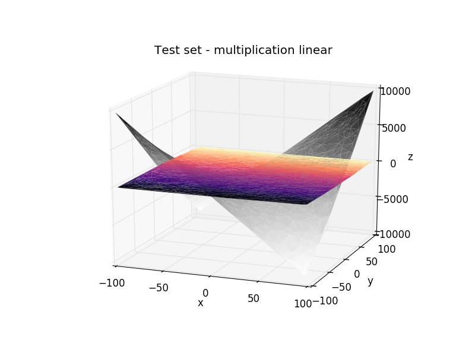

Linear Regression
In linear regression, the computer tries to find a straight line that fits the dataset, in this case a plane, since the input data have two dimensions.
For sum and subtraction it fits perfectly the function
z(x, y) = θ0 + θ1x + θ2y
and finds the parameters
sum: θ0 = 0, θ1 = 1, θ2 = 1.
subtraction: θ0 = 0, θ1 = 1, θ2 = -1.


This method can only fit straight lines and planes, it's impossible to fit the multiplication and division curves without providing polynomial features.
It's possible to see the difference between the expected multiplication (gray) and the fitted plane with linear regression.

The best fit for both multiplication and division is a plane close to 0 with a low inclination.